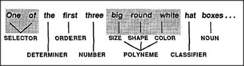

At various points in their development, most children seem suddenly to comprehend new kinds of sentences. Thus, once they learn to deal with single adjectives, some children quickly learn to deal with longer strings like these:
Dogs bark. Big dogs bark. Big shaggy dogs bark. Big black shaggy dogs bark.
If this were done by using word-string sentence-frames, it would require a separate frame for each different number of adjectives. Another scheme would not use any frames at all but have the language-agency convert each adjective, as it arrives, into some corresponding neme. And yet another scheme to handle this (still popular among some grammar theorists) would have each successive adjective arouse a new subframe inside the previous one. However, when we look more closely at how people use adjectives, we find that these strings are not simple at all. Compare the two phrases below:
The wooden three heavy brown big first boxes . . . The first three big brown heavy wooden boxes . . .
Our language-agents scarcely know what to do with that first string of words because it doesn't fit the patterns we normally use for describing things. This suggests that we use framelike structures for describing nouns as well as verbs — that is, for describing things as well as actions. To fill the terminals of those frames, we expect their ingredients to arrive in a more or less definite order. We find it hard to understand a group of English adjectives unless they are arranged roughly as shown below.
Whenever a language community can agree on forms like these, expression becomes easier. Then every individual can learn, once and for all, where to put — and where to find — the answers to questions most frequently asked. In English one learns to say green box, while in French one says box green. It doesn't matter which order is used — as long as everyone agrees to do it the same way. But what are the questions most frequently asked — the ones we build into our language-forms? The answer to this is likely to be somewhat circular, since the language culture in which we're raised will probably affect the kinds of questions that will seem most natural to ask. Still, there could be useful clues in features that are common to many different languages.
Many scientists have asked, indeed, why so many human languages use similar structures such as nouns, adjectives, verbs, clauses, and sentences. It is likely that some of these reflect what is genetically built into our language-agencies. But it seems to me even more likely that most of these nearly universal language-forms scarcely depend on language at all — but reflect how descriptions are formed in other agencies. The most common forms of phrases could arise not so much from the architecture of the language-agencies as from the machinery used by other agencies for representing objects, actions, differences, and purposes — as suggested in section 22.7 — and from how those other agencies manipulate their memories. In short, the ways we think must have a strong and universal influence on how we speak — if only through its influence on the sorts of things we'll want to say.